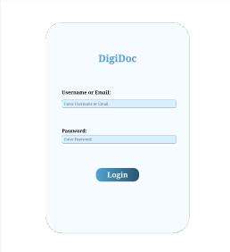
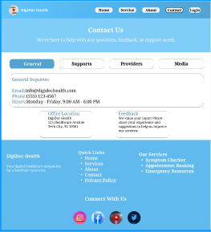
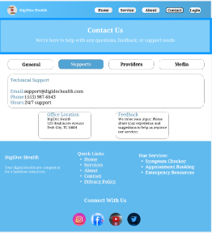
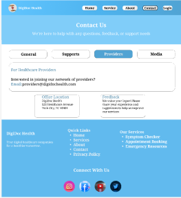
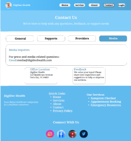
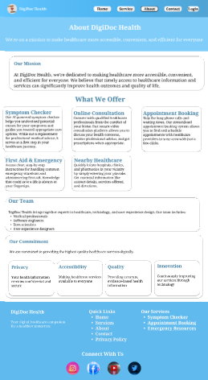
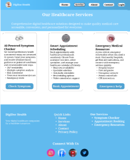
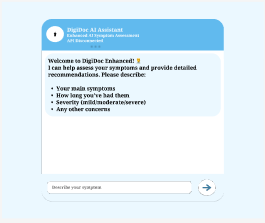
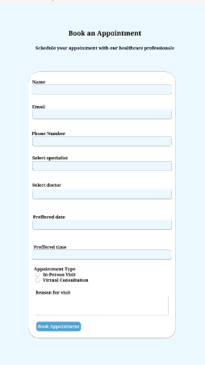
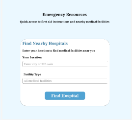

PROJECT-2:- DigiDoc – Healthcare Website UI/UX Design
Introduction
DigiDoc is a healthcare website UI/UX design project created to make medical services easily accessible online.
The platform allows users to find doctors, book appointments, check symptoms, and access emergency resources in one place.
The design focuses on simplicity, trust, and user-friendly navigation.
Project Objective
- To provide easy access to healthcare services
- To simplify appointment booking process
- To create a clean and trustworthy medical interface
- To support users in emergencies
Problem Statement
- Difficult navigation in healthcare websites
- Lack of quick appointment booking
- No centralized medical information
- Poor user experience for patients
Proposed Solution
- Simple and clean UI design
- Step-by-step appointment booking
- Clear navigation and readable layout
- Emergency access section
Tools Used
- Figma – UI/UX design and prototyping
- Icons & UI components
- Color theory & typography
Design Approach
- User-centered design
- Minimal and clean interface
- Consistent colors and fonts
- Easy navigation flow
Screen-Wise Explanation
1. Homepage
- Logo, tagline, and navigation menu
- Services, Doctors, Appointments sections
- Sign Up / Sign In buttons
2. Login Screen
- Email and password fields
- Forgot password option

3. Contact / General Inquiry
- Name, Email, Subject, Message fields
- Submit button

4. Support
- FAQs and help guides
- Issue search option

5. Providers / Doctors
- Doctor name, specialization, rating
- Search and filter options

6. Media / Resources
- Health articles and awareness content

7. About
- Company vision, mission, and values

8. Services
- Online consultation
- Lab tests
- Prescription services

9. Symptom Checker
- User enters symptoms
- Suggested health guidance

10. Appointment Booking
- Select doctor, date, time
- Confirm appointment

11. Emergency Resources
- Emergency contact numbers
- Nearby hospitals

What I Learned
This project helped me understand healthcare UX, user trust design, and structured information flow.
Conclusion
DigiDoc demonstrates my ability to design a complete healthcare website with a user-friendly and professional UI/UX approach.